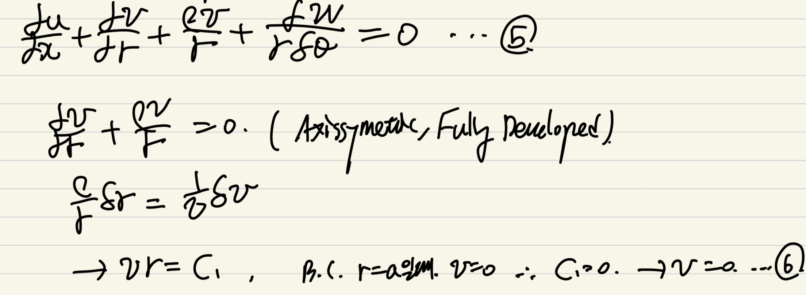
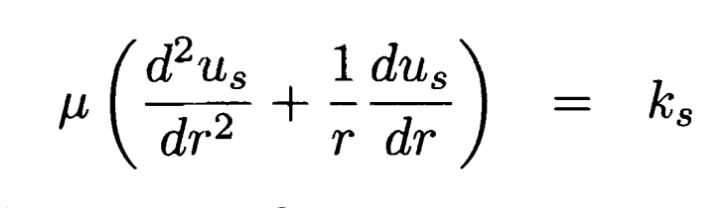

[Pulsatile flow] Steady flow _Poiseuille flow
[Prerequisite]
1.Fluid dynamics
(continutiy and momentum eq on a rigid tube)
2. Bessel Function
(First, and Second order Bessel function)
Blood 를
Fluid 관점에서 해석할 때,
크게 2가지 특징이 존재한다.
1. Non-Newtonian characteristic
2. 심장의 주기적인 박동 flow
- Pulsatile Flow.
first 특성은, 블로그의
https://jeffdissel.tistory.com/85
Blood Viscosity
blood 는 다음 4가지로 구성 되어 있다. Components of Blood-Red blood cells-White blood cells-Platelets-Extracellular fluid(Plasma) 여기서, viscosity을 결정하는 요소는 바로Red blood cells들의 함유량으로 결정된다.He
jeffdissel.tistory.com
blood viscosity 부분에서 다루었고,
지금부터 두번째
Pulsatile Flow 에 대해서 알아보자.
참고할 책은
![[Pulsatile flow] Steady flow _Poiseuille flow](./images/img-001.png)
그중에 ch3,4,5를 다룰 것이고
Ch3 Steady Flow in a tube
Ch4 Pulsatile Flow in a Rigid Tube
Ch5 Pulsatile Flow in an Elastic Tube
를 먼저 다루어 보자.
제일 먼저, tube에서 미소 부피를 떼어내어
연속방정식(질량보존법칙)을 분석해보자.
![[Pulsatile flow] Steady flow _Poiseuille flow](./images/img-002.jpg)
Influx - outflux (x,r,thea 방향)
= 전체 부피차이만큼의 질량변화량
식을 통해서 4번의 식이 도출되고,
incompressible Flow가정을 더해주면,
5번식으로 정리된다.

이후에, Axissymetric, FD 가정을 통해서
Theta방향으로 유체의 특성이 변하지 않으며,
x방향으로 속도가 일정하다고 가정하면
v = 0 이 도출된다.(6번)
이후, Naviers Stokes 방정식
u 에 대한 식에서,
지금까지의 3가지 가정을 적용시키면,
![[Pulsatile flow] Steady flow _Poiseuille flow](./images/img-004.jpg)
다음 식이 나오게 된다(dp/dx = ks)

다음은 B.C을 이용하여 위식의 해를
직접 구해보자.
![[Pulsatile flow] Steady flow _Poiseuille flow](./images/img-006.jpg)
r = 0 일때 중심에서 발산하지 않게 하려면 상수1 = 0
r=a에서 벽에서 속도 = 0 (no-slip B.C)을 적용하면
![[Pulsatile flow] Steady flow _Poiseuille flow](./images/img-007.jpg)
위와 같이 최종적으로 속도장의 식이 나오며,
위의 식을
Poiseuilla flow
의 속도장 식이라고 말한다.
다시 정리해보면 가정은
1. Axissymetric
2. Fully Developed
3. Steady state
4. Newtonian Fluid
5. No-slip Boundary condition
6. incompressible flow
속도 profile을 나타내 보면,
다음과 같이 r=0 을 중심으로
axissymetric 한 속도 프로파일을 가지고있음을
알 수 있다.
![[Pulsatile flow] Steady flow _Poiseuille flow](./images/img-008.jpg)